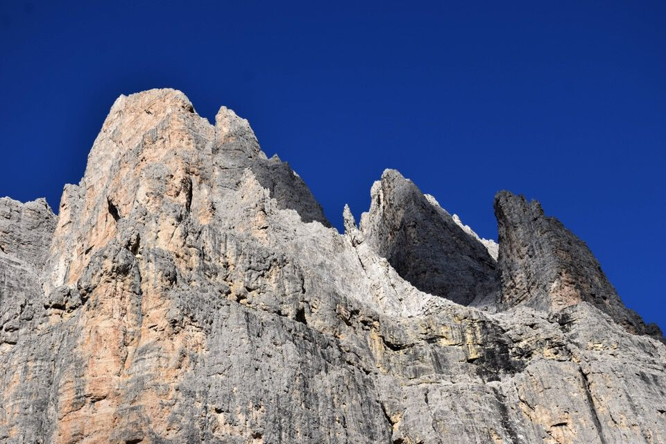
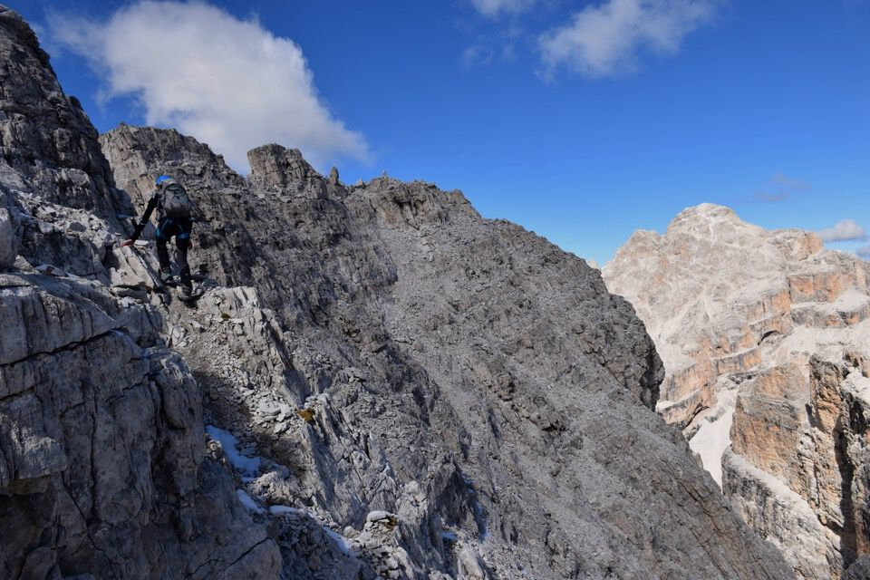

Una giornata straordinaria: la partenza dal lontanissimo fondovalle amplifica le emozioni che già si provano fra queste magnifiche e solitarie crode.
Con partenza più che antelucana arriviamo ad Auronzo prima dell'alba: la Croda da già bella mostra di sé.
Il toponimo Croda de Ligonto indica il monte nella sua interezza, non una sommità particolare: distinguere le varie punte (da sx Croda Rizzardi, Punta del Buco, Punta Lina e Monte Rosa) ha interesse solo dal punto di vista alpinistico.

Giusto in tempo per goderci i colori dell'alba sulle Marmarole: che spettacolo.
Le Pale di San Lucano sono infuocate.
Croda Bianca col Cimòn del Froppa.
Lassù, lontanissima, la cima principale della Croda di Ligonto, con l'ampio terrazzo sommitale che raggiungeremo molto ore più tardi.
La solitaria val d'Ambàta.
La Croda di Ligonto appare turrita e inacessibile fino all'ultimo momento.
Ormai prossimi al bivacco Gera, dominato dalla Croda di Tacco.
Un cervo enorme a duemila metri!
L'ambiente è di una bellezza straordinaria: qui il catino alla base di forcella Paola.
Le pareti della croda sono impressionanti.
Finalmente sul terrazzo sommitale: che faticaccia!
L'arrivo in cresta è indimenticabile...
...e appare di colpo l'immensa mole della Croda dei Toni: la foto non rende la luce e la bellezza con cui si è mostrata ai nostri occhi.
Questa è una delle escursioni panoramicamente più belle che ho fatto.
Il fortuito pertugio che permette l'accesso alla vetta.
Da una antecima verso Auronzo.

Verso Popéra e cima Bagni, col mitico Cadin del Biso ai suoi piedi.
Verso la val d'Ambàta con la bifida Croda da Campo.
Laggiù i paesi del Comelico.
Croda Bianca e Cimon del Froppa.
Purtroppo è ora di scendere: raramente ho calcato una cima di così splendido panorama.
Punta Lina, raggiungibile senza difficoltà secondo il Berti, ehm...
La cresta è di una bellezza straordinaria.
In discesa decidiamo di percorrere il cengione Est mediano della Croda di Ligonto, suggeritomi dal buon Luca Basso su consiglio dei suoi amici auronziani.
Non è che sentissimo il bisogno di allungare dopo quasi 2000 di dislivello (!), ma già che eravamo lì... e infatti la cengia ci ha regalato magnifiche visioni sui contrafforti della cima de Ambàta.
Questa sembra una foto fatta col grandangolo, ma non lo è!

La cengia ci deposita poco sotto forcella Paola.
Ultima foto, ma non ultimo sguardo: la Croda da Campo.
Qualche esperimento in B/N.